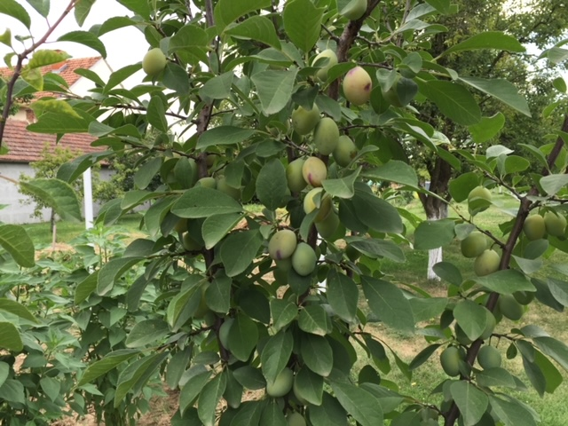

Galerija
Slike iz našeg vrta i slike našeg uzgojenog voća i povrća.



Obiteljsko gospodarstvo Pernar koje se nalazi na istoku Vinkovaca, poljoprivredom i voćarstvom počelo se baviti 1971. godine na površni od 7000 kvadratnih metara. Kroz sve te godine mijenjao se sadržaj i vrste voća i povrća. Danas na OPG-u Pernar od voćnih vrsta prevladavaju bijela šljiva, aronija, vinova loza, kajsija, kupina, jagoda, kruška, dunja, malina, a od povrća rajčica, krastavci, batat, krumpir, mrkva, peršun, zelena salata, špinat, grašak, cikla itd. Također cijelo to vrijeme na OPG-u Pernar vrši se i destilacija alkoholnih pića u našem 100 godina starom bakrenom, 80 litarskom kazanu. Od vlastitih rakija proizvodimo razne vrste likera, a od svježeg voća i povrća proizvodimo razne džemove, pekmeze, sirupe, kompote te kiselimo povrće za zimnicu.
Slike iz našeg vrta i slike našeg uzgojenog voća i povrća.